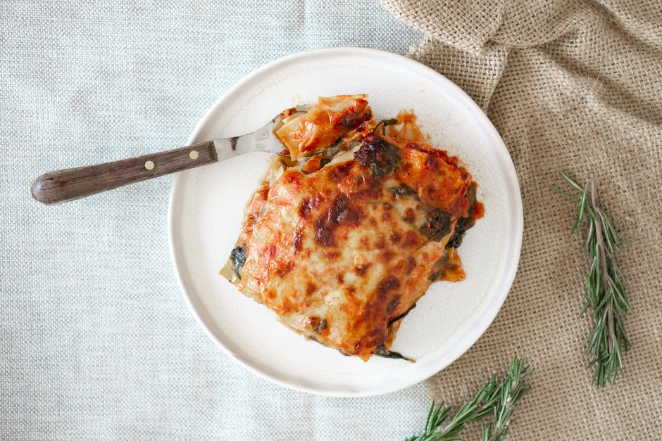

Chicken Tako Lasagna

Ingredients
- 4 boneless skinless chicken breats, cut into 1/4-inch strips
- 1/2 cup lime juice
- 2(1 ounce) packets taco seasoonimg mix (such as Old El Paso)
- 1 1/2 cups shredded mozzarella cheese, devided
- 1 cup sour cream
- 1 cup salsa
- salt and ground black pepper to taste
- 1 (8 ounce) package no-boil lasagna noodeles, or taste
Steps
- Combine chicken, lime juice, and taco seasoning in a large bowl. Stir to make sure chicken is evenly covered.
- Cook chicken mixture over medium heat until firm, about 15 minutes.
- Mix 1/2 cup mozzarella cheese, sour cream, and salsa in a bowl. Season with salt and pepper.
- Put a few spoonfuls of the sour cream mixture in the bottom of a 9x9-inch baking dish. Layer noodles and chicken on top. Cover with remaining 1 cup mozzarella cheese.
- Bake in the preheated oven until noodles are tender and cheese is melted, about 1 hour.
Cook's Notes
Use your preferred cheese and type of salsa.
Double ingredients for a 9x13-inch pan.
Nutrition Facts
Per Serving: 271 calories; protein 19.9g; carbohydrates 21.6g; fat 11.4g; cholesterol 56.7mg; sodium 904.5mg. Full Nutrition